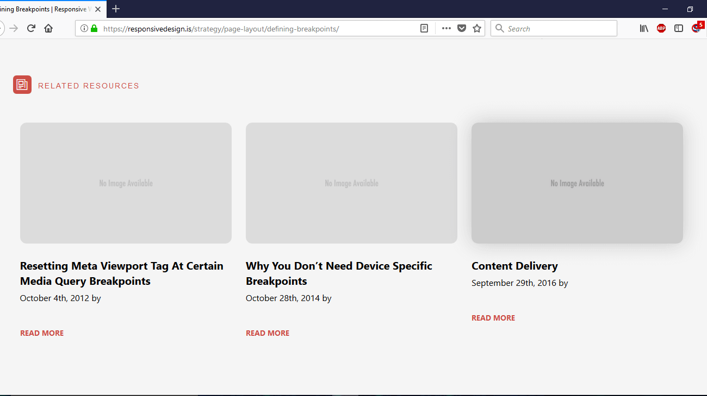
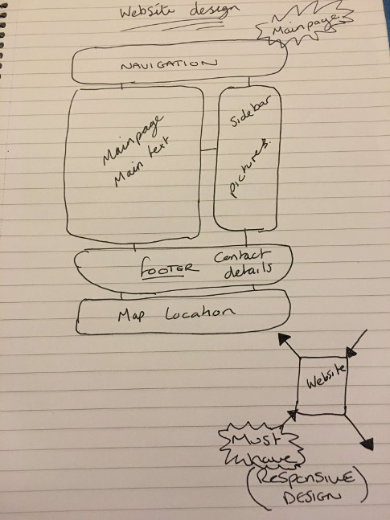

Most influential when designing my website
When gathering inspiration and knowledge for designing my website, I searched many sites to hopefully help build a satisfying website for my project.
I then came across a particular website that I found would be benefical to help build the basis for my design.
The website that I came across is called https://responsivedesign.is/ the website shows that when either using a personal computer or
even a mobile device that the website was capable of catering for both, as the below pictures show and indicate.

As you can see within this picture, the view that you can see is what a user would see if they were to use a personal computer, whilst viewing the mentioned site.
To note while looking at the picture, the row of images you have along the width far suiting a view that you would get at a personal computer.
You can see the difference compared to the other photo below, regarding the resolution and the design when resized to fit a mobile device.
After many discussions with my team and after many designs and planning the layout of the website I am Creating, I decide I truly would implement the fantastic design where my website would fit and adapt to which ever device the user decides to use to access the website I create. Keeping this in mind i decide to create a wireframe that I believe would keep the design interesting and flexable to be able to adpat to which ever device is used to view the website.
As you can see with the wireframe image how I wanted my website to look like, with also the ability to adapt to the device viewing the site. Responsive design is essential to websites in todays web design as the majority of users now prefer to use mobile devices over personal computers. What is responsive design? Responsive design is a web design and a technique that creates a site that adapts to the size of a users screen. Responsive design can optimise a users browsing proficiency by creating a adaptable and responsive web page, optimised for the particular device that is using it. Growing use of the internet and creation of web applications on tablets and mobile devices have been the main major force behind this development.